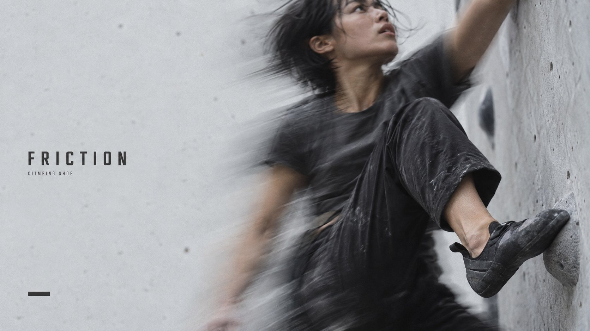
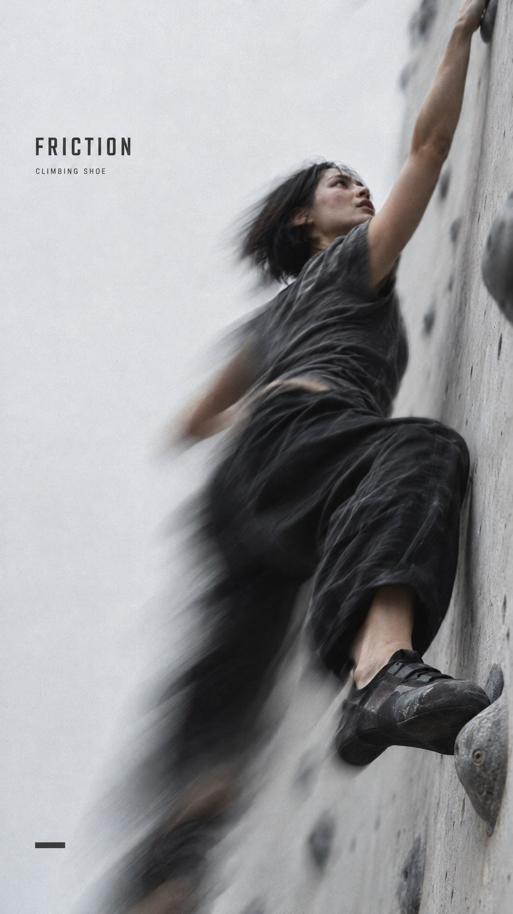
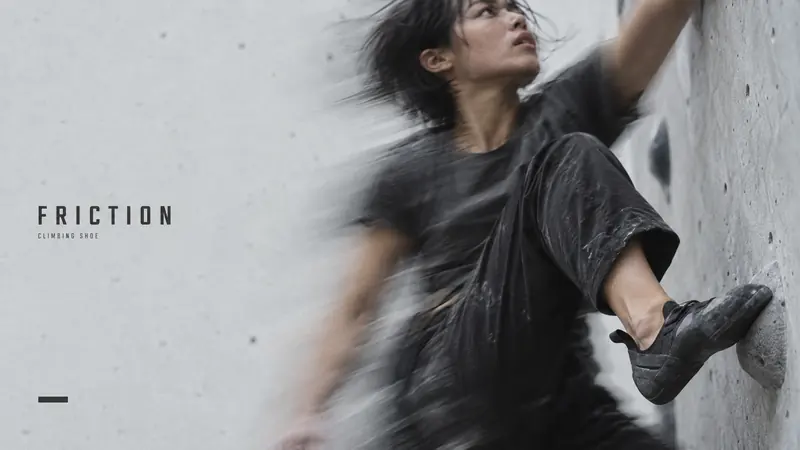
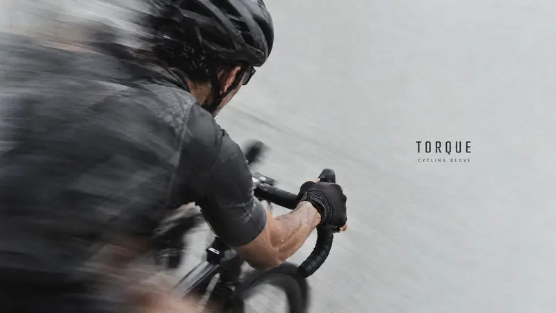
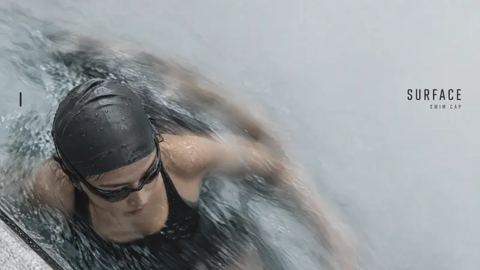
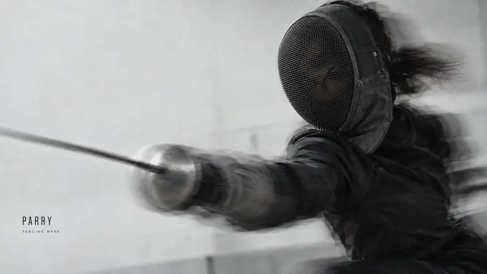

Product + Campaign · AI image style prompt
Kinetic Slice
Restrained photographic sports-equipment editorials: soft overcast light, film grain, slow-shutter body ghosts around one sharp worn product, 40% quiet grey field and a small condensed title.


4 example cases
Same style.json, different subjects. Each case's values are in the examples section of the JSON.




What this style does
Restrained photographic sports-equipment editorials: soft grey daylight, visible film grain, optical body ghosts, quiet fields and small condensed titles.
Signature traits
- Photograph one real-looking athlete wearing the equipment in soft natural overcast light, never a CG render or glossy sports commercial.
- Keep visible fine film grain, muted colour and imperfect optical softness comparable to R1 and R4; exclude rim lighting, HDR contrast, glow and light streaks.
- Reserve approximately 40 percent of the whole frame as near-empty pale grey or off-white field, excluding figures, ghosts, water texture and type from that count.
- Use R2-like strong camera motion blur and translucent body ghosts confined around the athlete, with a single locally clearer worn product as in R4, without inset frames.
- Retain R3-like charcoal human mass against a pale field, with open natural shadow detail instead of a black silhouette rimmed with light.
- Use a calm, small upright condensed sans title in charcoal, plus one much smaller neutral category; the photograph dominates.
style.json
{
"schema_version": "2.2",
"style_version": "2.0.0",
"style_name": "Kinetic Slice",
"style_slug": "kinetic-slice",
"style_summary": "Restrained photographic sports-equipment editorials: soft grey daylight, visible film grain, optical body ghosts, quiet fields and small condensed titles.",
"category": "Product + Campaign",
"environment_variables": {
"ASPECT_RATIO": "9:16 or 16:9, natively generated",
"STYLE_FIDELITY_ANCHORS": "Prioritized CORE and FLEX rules",
"SOURCE_CONTENT_TO_AVOID": "Source exclusions",
"SUBJECT": "One athlete and worn product",
"DESIGN_DIRECTION": "Action, camera, placement and ratio adaptation",
"MAIN_TEXT": "Exact retained title",
"SECONDARY_TEXT": "Sparse equipment category"
},
"style_fidelity_anchors": [
"[CORE] Photograph one real-looking athlete wearing the equipment in soft natural overcast light, never a CG render or glossy sports commercial.",
"[CORE] Keep visible fine film grain, muted colour and imperfect optical softness comparable to R1 and R4; exclude rim lighting, HDR contrast, glow and light streaks.",
"[CORE] Reserve approximately 40 percent of the whole frame as near-empty pale grey or off-white field, excluding figures, ghosts, water texture and type from that count.",
"[CORE] Use R2-like strong camera motion blur and translucent body ghosts confined around the athlete, with a single locally clearer worn product as in R4, without inset frames.",
"[CORE] Retain R3-like charcoal human mass against a pale field, with open natural shadow detail instead of a black silhouette rimmed with light.",
"[CORE] Use a calm, small upright condensed sans title in charcoal, plus one much smaller neutral category; the photograph dominates.",
"[CORE] Use at most one transformed graphic device, a single short solid dash, or none; prohibit product rectangles, crosshair grids and graphic motion trails.",
"[FLEX] Vary athlete crop, camera elevation, motion direction and title location between sports while keeping light and colour roles constant.",
"[FLEX] Recompose separately for each ratio, using negative space and the type-to-figure relation as the design structure."
],
"source_content_to_avoid": [
"No reference brand names, product names, slogans, logos, watermarks or copied words; only the two exact case strings may appear.",
"No headphone profile, sunglasses, record-like earcup, star glint, full-frame grid or bottom capsule.",
"No city runner, repeated separate runners or split motivational sentence layout.",
"No frontal visor portrait, orange eyewear or orange light trails.",
"No office runner, drink can, watch, books or thin white product rectangles."
],
"visual_deconstruction": {
"grammar": "Photographic athlete-equipment editorial with optical movement and selective temporal clarity; restrained type and asymmetrical negative space.",
"fusion": {
"R1": "Visible film grain, pale cool grey and black fabric, restrained editorial spacing; no grid or profile.",
"R2": "Directional camera blur and translucent single-athlete ghosts; upright condensed sans reduced in size.",
"R3": "Dark organic human mass against a light field, with open natural shadows; no orange and no frontal visor.",
"R4": "Product stays locally clearer than moving body inside the same exposure; no inset and no enclosing frame.",
"balance": "Each appears in every image through substantial finish, movement, value structure or focus relationship; no source supplies more than half the core visual system."
},
"signature": {
"R1": "Profile + grid becomes off-axis sport crop + asymmetrical quiet field.",
"R2": "Lateral runner + huge split slogan becomes different sport motions + one small noun.",
"R3": "Frontal face + orange visor trail becomes oblique body mass + neutral blurred fabric.",
"R4": "Two sharp boxed product windows become one unboxed in-scene focus island."
},
"energy": {
"density": "Target 38–45% genuinely calm grey/white surface, centred on user-requested 40%; subject/ghosts/type are active. This is a user-directed target, not a fabricated reference median.",
"layering": "One photographic scene, temporal body ghosts and sparse type; no stack of graphic overlays.",
"disorder": "Strong optical smear and visible film grain, low graphic disorder; no grime or paper damage.",
"tension": "Motion and aggressive cropping inside a bounded active zone versus near-empty field; title remains quiet.",
"measurement": "Manually delimit calm background on review grids; count partial cells conservatively, subtract text and ghosts, report a range instead of false pixel precision."
},
"series_constants": {
"palette_roles": "Pale neutral grey/off-white field, charcoal kit and title, desaturated skin or water; no compulsory orange accent.",
"light": "Neutral soft overcast or large window light, gentle falloff, no studio rim or dramatic specular polish.",
"layout_kit": "Asymmetrical quiet field, small condensed noun/category pair, zero or one short solid dash.",
"placement": "Title occupies at least three positions; figure mass repeats a side at most twice; optional dash changes location or is omitted."
}
},
"composition": {
"ratio_pair": "9:16 or 16:9",
"structure": "About 40% calm field integrated with photographic negative space; user restraint overrides the generic graphic-panel density guidance. No border padding or template grid.",
"adaptation": "Each ratio is generated natively; preserve the focus product but reframe athlete and negative space."
},
"photographic_direction": {
"camera": "Real photographic lens perspective, slow shutter body ghosts, one locally readable worn product; no artificial detail inserts.",
"light": "Soft neutral daylight with open shadows and modest highlights.",
"finish": "Fine visible film grain of roughly 1–2 pixels per 1000-pixel short edge across photographic tones including grey ground; modest desaturation, natural skin/fabric irregularity, blurred moving edges. No sharpening, plastic smoothing, glossy CG, bloom, HDR, luminous streaks or grit."
},
"typography": {
"primary": "Charcoal upright condensed medium-bold sans; title cap height about 3–4% of short edge, never billboard-sized.",
"secondary": "One small neutral sans category beneath or beside title, no other copy.",
"text_policy": "MAIN_TEXT and SECONDARY_TEXT are exact primary strings; no texture text."
},
"color_palette": [
{
"color": "#D4D5D2",
"role": "pale grey field"
},
{
"color": "#ECEDE8",
"role": "off-white field variation"
},
{
"color": "#292D2C",
"role": "charcoal kit and all type"
},
{
"color": "#83918B",
"role": "muted photographic water/fabric undertone"
}
],
"design_rules": [
"Keep one athlete and one worn-equipment focal point.",
"Measure quiet field honestly and retain optical tension.",
"Use no more than one short dash and never a product frame or full grid.",
"Vary title, figure and optional dash placement; preserve palette and light.",
"Render only exact title and category; all equipment is unbranded."
],
"do": [
"Use a slow-shutter photographic feel and imperfect natural materials.",
"Let sport action determine blur direction and crop.",
"Generate both ratios natively and review real outputs."
],
"avoid": [
"CG sports-ad finish, gloss, dramatic rim light, glow, streaks, HDR and hyper-sharp detail.",
"Boxed close-ups, full-frame grids, stacked devices, giant type and dense labels.",
"Reference text or identity, extra slogans and fixed-position templates."
],
"prompt_template": "Create one native {ASPECT_RATIO} photographic sports-equipment editorial poster, a modest grainy real-camera photograph with restrained graphic design. {STYLE_FIDELITY_ANCHORS}\nFusion: R1 supplies grain and grey editorial spacing, R2 camera ghosts and condensed sans, R3 dark organic mass against pale field, R4 in-scene focus contrast WITHOUT boxes.\nSubject: {SUBJECT}\nComposition: {DESIGN_DIRECTION}\nUse exactly \"{MAIN_TEXT}\" as the small charcoal condensed title and \"{SECONDARY_TEXT}\" as the tiny charcoal category. No other text. About 40% must stay near-empty grey/white, while the active zone has powerful optical blur and crop tension.\nExclude: {SOURCE_CONTENT_TO_AVOID}\nNatural photography is mandatory: no CG gloss, rim light, HDR, glow, orange streaks, product insets or rectangular frames. Do not make a sample more polished than the references.",
"negative_prompt": "CGI, 3D render, glossy sports commercial, studio rim light, HDR, luminous trails, orange glow, plastic skin, excessive sharpening, product window, white rectangle, grid, multiple devices, huge title, copied source words, logo, border padding, extra limbs.",
"examples": [
{
"case_name": "friction",
"values": {
"MAIN_TEXT": "FRICTION",
"SECONDARY_TEXT": "CLIMBING SHOE",
"SUBJECT": "An adult woman climber with short dark hair, faded charcoal tee and soft black trousers, pulling upward on a sparse pale grey bouldering wall. One black rubber climbing shoe presses a small edge, tactile and locally clearer than the body; unbranded.",
"DESIGN_DIRECTION": "9:16: low oblique view up the wall, body stretched as a long diagonal from the shoe at lower-right to a reaching hand cropped by the top-right edge; strong vertical drag; tall quiet pale-wall strip on left about 40%; small title upper-left with category; one short thick charcoal dash near bottom-left. 16:9: quiet wall across left 40-45%, body bends as a diagonal across the right half, shoe lower-right, head and hand cropped by top edge; same title and dash placement. No artificial inset."
}
},
{
"case_name": "torque",
"values": {
"MAIN_TEXT": "TORQUE",
"SECONDARY_TEXT": "CYCLING GLOVE",
"SUBJECT": "An adult track cyclist in worn matte graphite jersey, hands in black fabric cycling gloves gripping curved drop bars. High oblique view crops most of the bicycle; one gloved hand and adjacent forearm remain locally readable.",
"DESIGN_DIRECTION": "9:16: camera high above and behind the left shoulder looking steeply down; helmet, back and arms fill the lower 55%, gloved hand on bar near lower-centre; panning ghosts trail toward lower-left; calm pale grey track across the upper 40%; small title at right edge above the rider. 16:9: more horizontal shoulder-to-hand diagonal across left 55%, helmet cropped top-left, ghosts trail left, empty grey right 40% holding the title at mid-height. No graphic device; product worn, not an isolated close-up."
}
},
{
"case_name": "surface",
"values": {
"MAIN_TEXT": "SURFACE",
"SECONDARY_TEXT": "SWIM CAP",
"SUBJECT": "An adult woman swimmer wearing a matte dark grey silicone swim cap and charcoal swimsuit, seen from overhead while turning gently at a pool edge. Cap and one shoulder locally clearer, arm and lower body doubled softly by long exposure.",
"DESIGN_DIRECTION": "9:16: top-down close crop, head and shoulders lower-centre slightly left, body cropped by bottom edge, one arm sweeping upward with long-exposure doubling; quiet pale pool surface across the upper 40%; title upper-right; one short vertical charcoal dash near left edge at mid-height. 16:9: head low-left, body cropped by bottom and left edges, quiet upper/right field with title upper-right. No dark vignette, no glowing water or inset."
}
},
{
"case_name": "parry",
"values": {
"MAIN_TEXT": "PARRY",
"SECONDARY_TEXT": "FENCING MASK",
"SUBJECT": "One adult fencer in a matte dark training jacket wearing a real woven mesh fencing mask, lunging toward the camera in a sparse pale grey practice space. Mesh has ordinary dull wire and cloth binding, worn on the head; shoulder and foil arm make a broad soft double exposure.",
"DESIGN_DIRECTION": "9:16: close oblique rear-three-quarter crop, masked head in the upper-right third, torso exiting right; foil arm and blade sweep diagonally to lower-left with optical drag; quiet pale field about 40% along left and upper-left; small title lower-left. 16:9: masked head upper-right, torso exiting right and bottom, foil sweeping long and low toward the left, wide quiet left field, title lower-left. Head stays attached naturally; no graphic device."
}
}
]
}